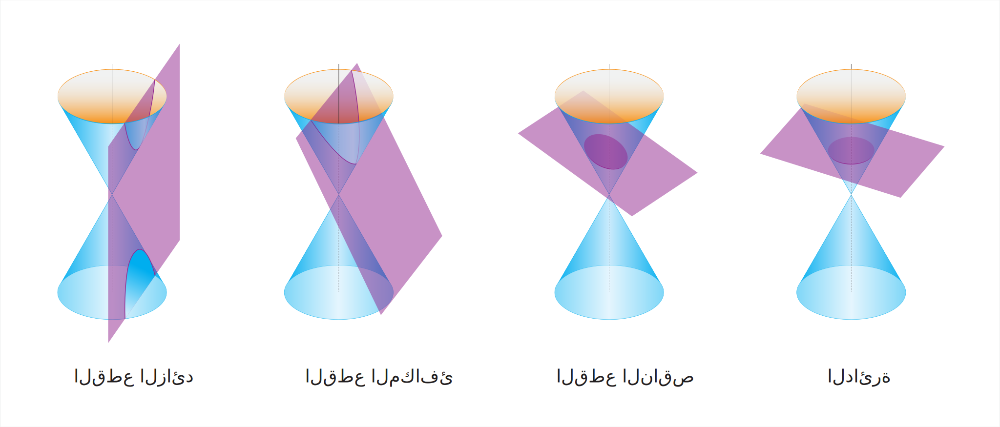

|
أبو عبيد الله البكري هو جغرافي[1] ومؤرخ وأديب أندلسي من القرن الحادي عشر الميلادي، وُلد في هويلفا في الأندلس، واشتهر بكتاباته الجغرافية والتاريخية، لا سيما كتابه الشهير "كتاب المسالك والممالك"، الذي يُعد من أقدم وأهم المصادر حول جغرافيا العالم الإسلامي وأفريقيا في ذلك العصر. |
|
| الاسم الكامل | أبو عبيد الله البكري |
| تاريخ الميلاد | حوالي سنة 1014 ميلادية |
| مكان الميلاد | هويلفا، الأندلس (إسبانيا حالياً) |
| تاريخ الوفاة | 1094 ميلادية |
| مكان الوفاة | قرطبة، الأندلس |
| المهنة | جغرافي، مؤرخ، وأديب |
| أشهر ما يُعرف به | كتاباته في الجغرافيا وتاريخ البلاد الإسلامية وأفريقيا |
| أهم مؤلفاته | كتاب المسالك والممالك |
| اللغة | العربية |
| الدين | الإسلام |
السالنامة هي حولية أو كتاب سنوي دأبت الدولة العثمانية على إصداره بصورة دورية في حقبة التنظيمات {{التنظيمات الخيرية (Tanzimat-ı Hayriye): حركة إصلاحية عثمانية كبرى بدأت عام 1839 بدعم السلطان عبد المجيد، وامتدت لغاية عام 1876. هدفت إلى تحديث شامل لأنظمة الدولة إداريًا وماليًا وقضائيًا وتعليميًا، وفق النماذج الغربية. ومن هنا جاء اسمها "التنظيمات" في دلالة على إعادة تنظيم شؤون الدولة بأسس جديدة}}. تُقدِّم السالنامة عرضًا موجزًا، ولكنها غنية بالتفاصيل بشأن الأحداث والوقائع المتعلقة بسنة إصدارها، وتسلط الضوء على مختلف المؤسسات الرسمية التابعة للدولة (مثل النظارات/ الوزارات والولايات)، وتوفر معلومات عن المسؤولين البارزين والموظفين في تلك المؤسسات. علاوة على ذلك، تتضمن السالنامات طيفًا واسعًا من المعلومات التي تشمل جوانب تشريفية (مثل الرتب والألقاب)، وإدارية (مثل التقسيمات الإدارية وأسماء الموظفين)، وعسكرية (مثل تشكيلات الجيش وأسماء الضباط)، واقتصادية (مثل معلومات الزراعة والتجارة في الولايات)، وثقافية (مثل أسماء المعاهد التعليمية والمكتبات)، وإحصائية سكانية، ما يجعلها وثائق مرجعية قيّمة ومفصّلة للباحثين والمؤرخين الراغبين في فهم التطورات والتغيّرات التي شهدتها الدولة العثمانية في مختلف المجالات، خلال مدة إصدارها منذ عام 1847، ولغاية آخر إصدارتها عام 1917.
Testing english {{This is a testing and thats cool init}}الدائرة فكرة تهجير غزة الفلسطينية السكان بشكل دوري ظهرت في الجيوسياسية الخطاب، ولكن التقارير الأخيرة تشير إلى أنه اكتسب الجر خلال دونالد ترامب الرئاسة (2017-2021). ادعاءات سرية خطة لنقل سكان غزة—إما المجاورة مصر و غيرها من الدول الإقليمية ، أو ضمن الأراضي المتنازع عليها—أثارت الجدل حول الشرعية والأخلاق والاستقرار الإقليمي[2]. هذه المادة يدرس أصول هذه المقترحات الجدوى بموجب القانون الدولي ، إمكاناتهم الإنسانية عواقب جيوسياسية.
Testing english {{This is a testing and thats cool init}}المخروطيةالمخروطية {{في كتابه استخراج الأوتار في الدائرة بخواص الخط المنحني فيه، تناول أبو الريحان البيروني}} انتمى للإخوان المسلمين فكرًا عام 1977 وتنظيميًا أواخر عام 1979 وعمل عضوًا بالقسم السياسي بالجماعة منذ نشأته عام 1992. ترشح لانتخابات مجلس الشعب 1995، وانتخابات 2000 ونجح فيها وانتخب عضوًا بمجلس الشعب المصري عن جماعة الإخوان وشغل موقع المتحدث الرسمي باسم الكتلة البرلمانية للإخوان. وفي انتخابات مجلس الشعب • 2005 حصل على أعلى الأصوات وبفارق كبير عن أقرب منافسيه(البكري) ولكن تم إجراء جولة إعادة أعلن بعدها فوز منافسه. كان من أنشط أعضاء مجلس الشعب وصاحب أشهر استجواب في مجلس الشعب عن حادثة قطار الصعيد، وأدان الحكومة وخرجت الصحف الحكومية في اليوم التالي تشيد باستجوابه.[14]وقد اختير د. مرسي عضوًا بلجنة مقاومة الصهيونية بمحافظة الشرقية، كما اختير عضوًا بالمؤتمر الدولي للأحزاب والقوى السياسية والنقابات المهنية، وهو عضو مؤسس باللجنة المصرية لمقاومة المشروع الصهيوني.[15] شارك في تأسيس الجبهة الوطنية للتغيير مع د. عزيز صدقي عام 2004؛ كما شارك في تأسيس التحالف الديمقراطي من أجل مصر والذي ضم 40 حزبًا وتيارًا سياسيًا 2011، انتخبه مجلس شورى الإخوان في 30 أبريل 2011 رئيسًا لحزب الحرية والعدالة الذي أنشأته الجماعة بجانب انتخاب عصام العريان نائبًا له ومحمد سعد الكتاتني أمينًا عامًّا للحزب.
Testing english {{This is a testing and thats cool init}}
تناقش هذه الدراسة فرضية بروز الإسلام الاجتماعي
بالمغرب، من خلال دراسة أكبر حركتين للإسلام
السياسي، وهما جماعة العدل والإحسان وحركة التوحيد
والإصلاح بالمغرب. تركز الدراسة على مفهوم
"الإسلام الاجتماعي"، بما يعنيه من تقديم
مساعدات مالية وعينية وخدمات صحية وتعليمية ورياضية
وفنية وتربوية للعديد من الفئات والشرائح
الاجتماعية. تنطلق الدراسة من إشكالية بروز الإسلام
الاجتماعي وعلاقته بمفهوم "فقراء الحضر"
في ظل "الأزمة" التنموية التي يشهدها
المغرب منذ ثمانينيات القرن العشرين، وإبراز الانعكاسات
الاجتماعية على أهم طبقة اجتماعية، وهي الفئات المتوسطة
الدنيا والفقيرة. تبين الدراسة أن الحركتين
الإسلاميتين المبحوثتين استطاعتا أن تشكلا
روابط تضامنية جديدة/ قديمة، قائمة على أساس ديني/
عصبوي، عوضت الأشكال التضامنية التقليدية التي كانت
تحتضن الفئات المتوسطة والفقيرة في أوقات سابقة.
* هذه الدراسة منشورة في العدد 69 (تموز/ يوليو 2024)
من دورية " سياسات عربية" (الصفحات 66-83)وهي دورية محكّمة للعلوم
السياسية والعلاقات الدولية، يصدرها المركز العربيّ للأبحاث
ودراسة السياسات ومعهد الدوحة للدراسات العليا كل شهرين.
سياسات عربية" (الصفحات 66-83)وهي دورية محكّمة للعلوم
السياسية والعلاقات الدولية، يصدرها المركز العربيّ للأبحاث
ودراسة السياسات ومعهد الدوحة للدراسات العليا كل شهرين.
** تجدون في موقع دورية "سياسات عربية" جميع محتويات الأعداد مفتوحة ومتاحة للتنزيل.
 تناقش هذه الدراسة فرضية بروز الإسلام الاجتماعي بالمغرب، من خلال
دراسة أكبر حركتين للإسلام السياسي، وهما جماعة العدل
والإحسان وحركة التوحيد والإصلاح بالمغرب. تركز الدراسة على
مفهوم "الإسلام الاجتماعي"، بما يعنيه من تقديم مساعدات مالية
وعينية وخدمات صحية وتعليمية ورياضية وفنية وتربوية للعديد من
الفئات والشرائح الاجتماعية. تنطلق الدراسة من إشكالية بروز
الإسلام الاجتماعي وعلاقته بمفهوم "فقراء الحضر" في ظل
"الأزمة" التنموية التي يشهدها المغرب منذ ثمانينيات القرن
العشرين، وإبراز الانعكاسات الاجتماعية على أهم طبقة اجتماعية، وهي
الفئات المتوسطة الدنيا والفقيرة. تبين الدراسة أن الحركتين
الإسلاميتين المبحوثتين استطاعتا أن تشكلا روابط تضامنية
جديدة/ قديمة، قائمة على أساس ديني/ عصبوي، عوضت الأشكال
التضامنية التقليدية التي كانت تحتضن الفئات المتوسطة
والفقيرة في أوقات سابقة.
تناقش هذه الدراسة فرضية بروز الإسلام الاجتماعي بالمغرب، من خلال
دراسة أكبر حركتين للإسلام السياسي، وهما جماعة العدل
والإحسان وحركة التوحيد والإصلاح بالمغرب. تركز الدراسة على
مفهوم "الإسلام الاجتماعي"، بما يعنيه من تقديم مساعدات مالية
وعينية وخدمات صحية وتعليمية ورياضية وفنية وتربوية للعديد من
الفئات والشرائح الاجتماعية. تنطلق الدراسة من إشكالية بروز
الإسلام الاجتماعي وعلاقته بمفهوم "فقراء الحضر" في ظل
"الأزمة" التنموية التي يشهدها المغرب منذ ثمانينيات القرن
العشرين، وإبراز الانعكاسات الاجتماعية على أهم طبقة اجتماعية، وهي
الفئات المتوسطة الدنيا والفقيرة. تبين الدراسة أن الحركتين
الإسلاميتين المبحوثتين استطاعتا أن تشكلا روابط تضامنية
جديدة/ قديمة، قائمة على أساس ديني/ عصبوي، عوضت الأشكال
التضامنية التقليدية التي كانت تحتضن الفئات المتوسطة
والفقيرة في أوقات سابقة.
يعتبر التعلم من أهم العوامل التي تساهم في تطوير المجتمعات ورفع مستوى الأفراد. فهو لا يقتصر فقط على الدراسة الأكاديمية، بل يشمل التعلم الذاتي، واكتساب المهارات، وتطوير الذات. في هذا المقال، سنناقش أهمية التعلم في حياة الإنسان وتأثيره على المجتمع.
l=\theta.r=\frac{\pi}{3}.6=2\pi.
C=\theta\cdot r+2r=\frac{\pi}{4}\cdot6+12=\frac{3\pi}{2}+12.
A=\frac{\theta}{2}r^2=\frac{\pi}{12}\cdot36=3\pi.
أهمية التعلم
التعلم هو الأساس الذي تقوم عليه الحضارات. فمن خلال التعلم، يكتسب الإنسان المعرفة والمهارات التي تمكنه من تطوير نفسه وتحقيق أهدافه. من بين الفوائد الرئيسية للتعلم:
- تحسين مهارات التفكير النقدي واتخاذ القرارات.
- فتح آفاق جديدة في سوق العمل وزيادة فرص التوظيف.
- تعزيز الثقة بالنفس وتحقيق الذات.
- المساهمة في تطوير المجتمع والابتكار.
أنواع التعلم
يوجد عدة أنواع من التعلم، منها:
- التعلم الأكاديمي: وهو التعليم الذي يتم في المدارس والجامعات ويشمل مختلف التخصصات.
- التعلم الذاتي: يتم من خلال البحث والقراءة والتجربة الشخصية.
- التعلم المهني: يركز على اكتساب مهارات عملية تساعد في أداء الوظائف المختلفة.
دور التعلم في النجاح
لا يمكن تحقيق النجاح بدون التعلم المستمر، فالناجحون دائماً يسعون لاكتساب المعرفة الجديدة وتطوير مهاراتهم. إليك بعض الخطوات التي تساعدك على تحقيق النجاح من خلال التعلم:
- تحديد الأهداف التعليمية بوضوح.
- وضع خطة تعلم منظمة.
- الالتزام بالتعلم المستمر والاستفادة من التكنولوجيا الحديثة.
- التطبيق العملي لما يتم تعلمه.
التعلم في العصر الرقمي
في الوقت الحالي، أصبح التعلم أكثر سهولة بفضل التكنولوجيا الحديثة. الإنترنت يوفر كمية هائلة من المعلومات التي يمكن الوصول إليها بسهولة. من أبرز أشكال التعلم الرقمي:
- الدورات التدريبية عبر الإنترنت.
- التعلم من خلال الفيديوهات التعليمية.
- استخدام التطبيقات التعليمية.
الأوبئة والطواعين التي تعرضت لها إفريقيا من منتصف القرن 8 إلى نهاية القرن 9
| المصادر | بعض الشهادات | نوع الكارثة | السنة (هجرية) |
|---|---|---|---|
|
- ابن قنفذ، أنس، ص 47. - ابن خلدون، رحلة 1/55‑19. - المغربي، ح 4، ص 84. |
- "أيام الوباء العام" - "يموت ألف شخص يومياً" - "من المواضع أرض إفريقية" |
طاعون | 750–748 |
| - الشفاء، الأدلة، ص 105. |
- "ما نزل بالناس من الطاعون" - "وقع الوباء بتونس" |
طاعون | 766–765 |
| - الأبي، الإكمال، ج 6، ص 34. | - "وكان قد وقع الوباء بتونس سنة 796هـ" | وباء | 796 |
| - ابن قنفذ القسنطيني، ص 199. | - "في هذه السنة وقع وباء بتونس وجهاتها" | وباء | 803–805 |
| - ابن قنفذ، ص 199. | - "في أوائل عام 847 كان الوباء بتونس ونواحيها" | وباء | 847 |
| - الزركشي، ص 147. | - "وفي جمادى الأولى المذكور، وقع ابتداء الوباء بتونس..." | وباء | 857 |
|
- الزركشي، ص 158. - ابن أبي دينار، ج 1، ص 149. |
- "وفي ذي القعدة عام 872 ابتداء الوباء بتونس..." - "ولم يزل ينتشر إلى شوال 873 حتى بلغ ألفاً كل يوم..." - "وسُجل عدد الموتى 44 ألفاً..." |
وباء | 872–873 |
| - السراج الحلال، ج 1، ص 1090. | - "وباء" | وباء | 895 |
الأوبئة والطواعين التي تعرضت لها إفريقيا من منتصف القرن 8 إلى نهاية القرن 9
| المصادر | بعض الشهادات | نوع الكارثة | السنة (هجرية) |
|---|---|---|---|
|
- ابن قنفذ، أنس، ص 47. - ابن خلدون، رحلة 1/55‑19. - المغربي، ح 4، ص 84. |
- "أيام الوباء العام" - "يموت ألف شخص يومياً" - "من المواضع أرض إفريقية" |
طاعون | 750–748 |
| - الشفاء، الأدلة، ص 105. |
- "ما نزل بالناس من الطاعون" - "وقع الوباء بتونس" |
طاعون | 766–765 |
| - الأبي، الإكمال، ج 6، ص 34. | - "وكان قد وقع الوباء بتونس سنة 796هـ" | وباء | 796 |
| - ابن قنفذ القسنطيني، ص 199. | - "في هذه السنة وقع وباء بتونس وجهاتها" | وباء | 803–805 |
| - ابن قنفذ، ص 199. | - "في أوائل عام 847 كان الوباء بتونس ونواحيها" | وباء | 847 |
| - الزركشي، ص 147. | - "وفي جمادى الأولى المذكور، وقع ابتداء الوباء بتونس..." | وباء | 857 |
|
- الزركشي، ص 158. - ابن أبي دينار، ج 1، ص 149. |
- "وفي ذي القعدة عام 872 ابتداء الوباء بتونس..." - "ولم يزل ينتشر إلى شوال 873 حتى بلغ ألفاً كل يوم..." - "وسُجل عدد الموتى 44 ألفاً..." |
وباء | 872–873 |
| - السراج الحلال، ج 1، ص 1090. | - "وباء" | وباء | 895 |
| المصادر | بعض الشهادات | نوع الكارثة | السنة (هجرية) |
|---|---|---|---|
|
- ابن قنفذ، أنس، ص 47. - ابن خلدون، رحلة 1/55‑19. - المغربي، ح 4، ص 84. |
- "أيام الوباء العام" - "يموت ألف شخص يومياً" - "من المواضع أرض إفريقية" |
طاعون | 750–748 |
| - الشفاء، الأدلة، ص 105. |
- "ما نزل بالناس من الطاعون" - "وقع الوباء بتونس" |
طاعون | 766–765 |
| - الأبي، الإكمال، ج 6، ص 34. | - "وكان قد وقع الوباء بتونس سنة 796هـ" | وباء | 796 |
| - ابن قنفذ القسنطيني، ص 199. | - "في هذه السنة وقع وباء بتونس وجهاتها" | وباء | 803–805 |
| - ابن قنفذ، ص 199. | - "في أوائل عام 847 كان الوباء بتونس ونواحيها" | وباء | 847 |
| - الزركشي، ص 147. | - "وفي جمادى الأولى المذكور، وقع ابتداء الوباء بتونس..." | وباء | 857 |
|
- الزركشي، ص 158. - ابن أبي دينار، ج 1، ص 149. |
- "وفي ذي القعدة عام 872 ابتداء الوباء بتونس..." - "ولم يزل ينتشر إلى شوال 873 حتى بلغ ألفاً كل يوم..." - "وسُجل عدد الموتى 44 ألفاً..." |
وباء | 872–873 |
| - السراج الحلال، ج 1، ص 1090. | - "وباء" | وباء | 895 |
"التعلم ليس مجرد اكتساب المعرفة، بل هو القدرة على تطبيقها لتحقيق النجاح والتطور." - شخص حكيم
القطوع المخروطية


القطوع المخروطية
خاتمة
يعد التعلم من أقوى الأدوات التي يمتلكها الإنسان لتحقيق النجاح والتطور. سواء كنت تتعلم من خلال التعليم الأكاديمي أو الذاتي أو المهني، فإن الأهم هو أن تواصل استكشاف المعرفة وتحقيق أهدافك.
السياق التاريخي: سياسة الولايات المتحدة و الصراع الفلسطيني-الإسرائيلي ،

ترامب الأوسط تراث
ورقة رابحة الإدارة في التعامل مع الصراع الإسرائيلي-الفلسطيني شهد تحولا كبيرا من قبل سياسات الولايات المتحدة. الإجراءات الرئيسية المدرجة بالاعتراف بالقدس عاصمة إسرائيل[3]أيد السيادة الإسرائيلية على مرتفعات الجولان[4]، السمسرة إبراهيم اتفاقات لتطبيع العلاقات العربية الإسرائيلية[5]. هذه التحركات المهمشة القيادة الفلسطينية الأولوية المخاوف الأمنية الإسرائيلية ، مما يمهد الطريق لمزيد من مقترحات جذرية.
الأزمة الإنسانية في غزة
غزة موطنا لأكثر من 2 مليون فلسطيني عانى من 16 سنوات من الحصار من قبل إسرائيل و مصر و الفقر الشديد و المتكرر الصراعات العسكرية[i]. هذا الأليمة السياق جعلت الإقليم نقطة محورية في مناقشات حول التهجير في غالب الأحيان على أنها "حل إنساني" من قبل أنصار[6].
أصول النزوح الاقتراح
التصريحات والتسريبات
في حين لا توجد سياسة رسمية كانت تنشر تقارير من عام 2020 استشهد ترامب مسؤولي الإدارة استكشاف خيارات لإعادة توطين اللاجئين الفلسطينيين في غزة شبه جزيرة سيناء في مصر أو الأردن[7]. جاريد كوشنر ، ترامب مستشار يقال ناقشت الفكرة مع القادة الإقليميين ، تأطير ذلك كجزء من أوسع الخطة الاقتصادية[ii].
فإن "السلام والازدهار" خطة
ترامب 2020 "السلام والازدهار" الرؤية ضمنا بدعم من مقايضة الأراضي الفلسطينية "الحكم الذاتي" في قطع الجيوب التي جادل النقاد يمكن نقل السكان[8]. الخطة صمت على غزة حالة غذت التكهنات حول النزوح جداول.
المكونات الرئيسية المزعومة خطة
الدبلوماسية التنسيق
اقتراح يقال تعتمد على إقناع مصر لاستيعاب سكان غزة من خلال حوافز مالية أو ضمانات أمنية[9]. أفكار مماثلة قد عممت في الأوساط السياسية الإسرائيلية ، مع بعض المسؤولين الدعوة إلى "الهجرة الطوعية" من الفلسطينيين[iii].
اللوجستية والتحديات القانونية
التهجير الجماعي يتطلب غير مسبوقة من التعاون الإقليمي يتعارض مع القانون الدولي ، بما في ذلك اتفاقية جنيف الرابعة على حظر التهجير القسري[10]. القانونية العلماء يقولون مثل هذه الخطة يمكن أن تشكل جريمة ضد الإنسانية[11].
آفاق تنفيذ
الجدوى السياسية
بايدن الإدارة قد نأت بنفسها عن ورقة رابحة في عهد المقترحات ، مؤكدا دعم حل الدولتين[12]. ومع ذلك ، فإن صعود الحكومات اليمينية في "إسرائيل" والتحول العربي التحالفات الحفاظ على النزوح النظريات على قيد الحياة في الخطاب السياسي[iv].
ردود الفعل الدولية
الدول العربية بما في ذلك مصر والأردن ، وقد رفضت علنا استيعاب الفلسطينيين نقلا عن السوابق التاريخية مثل نكبة العام 1948[13]. الأمم المتحدة حذرت من أن النزوح من شأنه أن يؤدي إلى تفاقم عدم الاستقرار الإقليمي[14].
آثار النزوح
المخاطر الإنسانية

{kind=link}
{kind=link}
{kind=link}
{kind=link}
{kind=link}
{kind=link}
{kind=link}
{kind=link}
{kind=link}
{kind=link}
{kind=link}
التهجير القسري من شأنها تعميق غزة الصدمة ، وخلق أزمة اللاجئين وتجهد الدول المضيفة' الموارد. المنظمات غير الحكومية التأكيد على أن البنية التحتية في قطاع غزة ، وبالفعل أنهكه الحصار والحروب لا يمكن الحفاظ على مزيد من الاضطراب[15].
التداعيات الجيوسياسية
وتشريد مخطط من المرجح أن تشعل احتجاجات واسعة النطاق يقوض مصداقية الولايات المتحدة في الجنوب العالمي ، وتشجيع الجماعات المتطرفة[v]. كما يمكن أن زعزعة الاستقرار في مصر ، حيث العامة المعارضة إلى قبول اللاجئين قوية[16].
القانونية والأخلاقية الأسئلة
القانون الدولي يحظر بشكل قاطع الطرد الجماعي و مجلس الأمن التابع للأمم المتحدة أن تتدخل لمنع مثل هذه التدابير[17]. الأخلاقية الانتقادات تشبيه الاقتراح إلى الحقبة الاستعمارية نقل السكان ، بحجة أنه يمحو حقوق الفلسطينيين في تقرير المصير[18].
انتمى للإخوان المسلمين فكرًا عام 1977 وتنظيميًا أواخر عام 1979 وعمل عضوًا بالقسم السياسي بالجماعة منذ نشأته عام 1992. ترشح لانتخابات مجلس الشعب 1995، وانتخابات 2000 ونجح فيها وانتخب عضوًا بمجلس الشعب المصري عن جماعة الإخوان وشغل موقع المتحدث الرسمي باسم الكتلة البرلمانية للإخوان. وفي انتخابات مجلس الشعب • 2005 حصل على أعلى الأصوات وبفارق كبير عن أقرب منافسيه[37] ولكن تم إجراء جولة إعادة أعلن بعدها فوز منافسه. كان من أنشط أعضاء مجلس الشعب وصاحب أشهر استجواب في مجلس الشعب عن حادثة قطار الصعيد، وأدان الحكومة وخرجت الصحف الحكومية في اليوم التالي تشيد باستجوابه.[14]وقد اختير د. مرسي عضوًا بلجنة مقاومة الصهيونية بمحافظة الشرقية، كما اختير عضوًا بالمؤتمر الدولي للأحزاب والقوى السياسية والنقابات المهنية، وهو عضو مؤسس باللجنة المصرية لمقاومة المشروع الصهيوني.[15] شارك في تأسيس الجبهة الوطنية للتغيير مع د. عزيز صدقي عام 2004؛ كما شارك في تأسيس التحالف الديمقراطي من أجل مصر والذي ضم 40 حزبًا وتيارًا سياسيًا 2011، انتخبه مجلس شورى الإخوان في 30 أبريل 2011 رئيسًا لحزب الحرية والعدالة الذي أنشأته الجماعة بجانب انتخاب عصام العريان نائبًا له ومحمد سعد الكتاتني أمينًا عامًّا للحزب.
انتمى للإخوان المسلمين فكرًا عام 1977 وتنظيميًا أواخر عام 1979 وعمل عضوًا بالقسم السياسي بالجماعة منذ نشأته عام 1992. ترشح لانتخابات مجلس الشعب 1995، وانتخابات 2000 ونجح فيها وانتخب عضوًا بمجلس الشعب المصري عن جماعة الإخوان وشغل موقع المتحدث الرسمي باسم الكتلة البرلمانية للإخوان. وفي انتخابات مجلس الشعب • 2005 حصل على أعلى الأصوات وبفارق كبير عن أقرب منافسيه[37] ولكن تم إجراء جولة إعادة أعلن بعدها فوز منافسه. كان من أنشط أعضاء مجلس الشعب وصاحب أشهر استجواب في مجلس الشعب عن حادثة قطار الصعيد، وأدان الحكومة وخرجت الصحف الحكومية في اليوم التالي تشيد باستجوابه.[14]وقد اختير د. مرسي عضوًا بلجنة مقاومة الصهيونية بمحافظة الشرقية، كما اختير عضوًا بالمؤتمر الدولي للأحزاب والقوى السياسية والنقابات المهنية، وهو عضو مؤسس باللجنة المصرية لمقاومة المشروع الصهيوني.[15] شارك في تأسيس الجبهة الوطنية للتغيير مع د. عزيز صدقي عام 2004؛ كما شارك في تأسيس التحالف الديمقراطي من أجل مصر والذي ضم 40 حزبًا وتيارًا سياسيًا 2011، انتخبه مجلس شورى الإخوان في 30 أبريل 2011 رئيسًا لحزب الحرية والعدالة الذي أنشأته الجماعة بجانب انتخاب عصام العريان نائبًا له ومحمد سعد الكتاتني أمينًا عامًّا للحزب.
{kind=link}
{kind=link}
انتمى للإخوان المسلمين فكرًا عام 1977 وتنظيميًا أواخر عام 1979 وعمل عضوًا بالقسم السياسي بالجماعة منذ نشأته عام 1992. ترشح لانتخابات مجلس الشعب 1995، وانتخابات 2000 ونجح فيها وانتخب عضوًا بمجلس الشعب المصري عن جماعة الإخوان وشغل موقع المتحدث الرسمي باسم الكتلة البرلمانية للإخوان. وفي انتخابات مجلس الشعب • 2005 حصل على أعلى الأصوات وبفارق كبير عن أقرب منافسيه[37] ولكن تم إجراء جولة إعادة أعلن بعدها فوز منافسه. كان من أنشط أعضاء مجلس الشعب وصاحب أشهر استجواب في مجلس الشعب عن حادثة قطار الصعيد، وأدان الحكومة وخرجت الصحف الحكومية في اليوم التالي تشيد باستجوابه.[14]وقد اختير د. مرسي عضوًا بلجنة مقاومة الصهيونية بمحافظة الشرقية، كما اختير عضوًا بالمؤتمر الدولي للأحزاب والقوى السياسية والنقابات المهنية، وهو عضو مؤسس باللجنة المصرية لمقاومة المشروع الصهيوني.[15] شارك في تأسيس الجبهة الوطنية للتغيير مع د. عزيز صدقي عام 2004؛ كما شارك في تأسيس التحالف الديمقراطي من أجل مصر والذي ضم 40 حزبًا وتيارًا سياسيًا 2011، انتخبه مجلس شورى الإخوان في 30 أبريل 2011 رئيسًا لحزب الحرية والعدالة الذي أنشأته الجماعة بجانب انتخاب عصام العريان نائبًا له ومحمد سعد الكتاتني أمينًا عامًّا للحزب.
انتمى للإخوان المسلمين فكرًا عام 1977 وتنظيميًا أواخر عام 1979 وعمل عضوًا بالقسم السياسي بالجماعة منذ نشأته عام 1992. ترشح لانتخابات مجلس الشعب 1995، وانتخابات 2000 ونجح فيها وانتخب عضوًا بمجلس الشعب المصري عن جماعة الإخوان وشغل موقع المتحدث الرسمي باسم الكتلة البرلمانية للإخوان. وفي انتخابات مجلس الشعب • 2005 حصل على أعلى الأصوات وبفارق كبير عن أقرب منافسيه[37] ولكن تم إجراء جولة إعادة أعلن بعدها فوز منافسه. كان من أنشط أعضاء مجلس الشعب وصاحب أشهر استجواب في مجلس الشعب عن حادثة قطار الصعيد، وأدان الحكومة وخرجت الصحف الحكومية في اليوم التالي تشيد باستجوابه.[14]وقد اختير د. مرسي عضوًا بلجنة مقاومة الصهيونية بمحافظة الشرقية، كما اختير عضوًا بالمؤتمر الدولي للأحزاب والقوى السياسية والنقابات المهنية، وهو عضو مؤسس باللجنة المصرية لمقاومة المشروع الصهيوني.[15] شارك في تأسيس الجبهة الوطنية للتغيير مع د. عزيز صدقي عام 2004؛ كما شارك في تأسيس التحالف الديمقراطي من أجل مصر والذي ضم 40 حزبًا وتيارًا سياسيًا 2011، انتخبه مجلس شورى الإخوان في 30 أبريل 2011 رئيسًا لحزب الحرية والعدالة الذي أنشأته الجماعة بجانب انتخاب عصام العريان نائبًا له ومحمد سعد الكتاتني أمينًا عامًّا للحزب.
الختام
{kind=link}
في حين ترامب المزعومة خطة لتهجير سكان غزة لا تزال غير مؤكدة ، مناقشة يعكس الاتجاهات في سياسة الشرق الأوسط: تناقص الفائدة في الولايات المتحدة في إقامة الدولة الفلسطينية الإسرائيلية التوسعية ، تطبيع الأفكار المتطرفة. تنفيذ هذه الخطة ستواجه القانونية واللوجستية والأخلاقية الحواجز ، ولكن مجرد النظر يؤكد الحاجة الملحة إلى معالجة غزة أزمة إنسانية من خلال العادل القائم على حقوق حلول. انتمى للإخوان المسلمين فكرًا عام 1977 وتنظيميًا أواخر عام 1979 وعمل عضوًا بالقسم السياسي بالجماعة منذ نشأته عام 1992. ترشح لانتخابات مجلس الشعب 1995، وانتخابات 2000 ونجح فيها وانتخب عضوًا بمجلس الشعب المصري عن جماعة الإخوان وشغل موقع المتحدث الرسمي باسم الكتلة البرلمانية للإخوان. وفي انتخابات مجلس الشعب • 2005 حصل على أعلى الأصوات وبفارق كبير عن أقرب منافسيه[37] ولكن تم إجراء جولة إعادة أعلن بعدها فوز منافسه. كان من أنشط أعضاء مجلس الشعب وصاحب أشهر استجواب في مجلس الشعب عن حادثة قطار الصعيد، وأدان الحكومة وخرجت الصحف الحكومية في اليوم التالي تشيد
انتمى للإخوان المسلمين فكرًا عام 1977 وتنظيميًا أواخر عام 1979 وعمل عضوًا بالقسم السياسي بالجماعة منذ نشأته عام 1992. ترشح لانتخابات مجلس الشعب 1995، وانتخابات 2000 ونجح فيها وانتخب عضوًا بمجلس الشعب المصري عن جماعة الإخوان وشغل موقع المتحدث الرسمي باسم الكتلة البرلمانية للإخوان. وفي انتخابات مجلس الشعب • 2005 حصل على أعلى الأصوات وبفارق كبير عن أقرب منافسيه[37] ولكن تم إجراء جولة إعادة أعلن بعدها فوز منافسه. كان من أنشط أعضاء مجلس الشعب وصاحب أشهر استجواب في مجلس الشعب عن حادثة قطار الصعيد، وأدان الحكومة وخرجت الصحف الحكومية في اليوم التالي تشيد باستجوابه.[14]وقد اختير د. مرسي عضوًا بلجنة مقاومة الصهيونية بمحافظة الشرقية، كما اختير عضوًا بالمؤتمر الدولي للأحزاب والقوى السياسية والنقابات المهنية، وهو عضو مؤسس باللجنة المصرية لمقاومة المشروع الصهيوني.[15] شارك في تأسيس الجبهة الوطنية للتغيير مع د. عزيز صدقي عام 2004؛ كما شارك في تأسيس التحالف الديمقراطي من أجل مصر والذي ضم 40 حزبًا وتيارًا سياسيًا 2011، انتخبه مجلس شورى الإخوان في 30 أبريل 2011 رئيسًا لحزب الحرية والعدالة الذي أنشأته الجماعة بجانب انتخاب عصام العريان نائبًا له ومحمد سعد الكتاتني أمينًا عامًّا للحزب
انتمى للإخوان المسلمين فكرًا عام 1977 وتنظيميًا أواخر عام 1979 وعمل عضوًا بالقسم السياسي بالجماعة منذ نشأته عام 1992. ترشح لانتخابات مجلس الشعب 1995، وانتخابات 2000 ونجح فيها وانتخب عضوًا بمجلس الشعب المصري عن جماعة الإخوان وشغل موقع المتحدث الرسمي باسم الكتلة البرلمانية للإخوان. وفي انتخابات مجلس الشعب • 2005 حصل على أعلى الأصوات وبفارق كبير عن أقرب منافسيه[37] ولكن تم إجراء جولة إعادة أعلن بعدها فوز منافسه. كان من أنشط أعضاء مجلس الشعب وصاحب أشهر استجواب في مجلس الشعب عن حادثة قطار الصعيد، وأدان الحكومة وخرجت الصحف الحكومية في اليوم التالي تشيد باستجوابه.[14]وقد اختير د. مرسي عضوًا بلجنة مقاومة الصهيونية بمحافظة الشرقية، كما اختير عضوًا بالمؤتمر الدولي للأحزاب والقوى السياسية والنقابات المهنية، وهو عضو مؤسس باللجنة المصرية لمقاومة المشروع الصهيوني.[15] شارك في تأسيس الجبهة الوطنية للتغيير مع د. عزيز صدقي عام 2004؛ كما شارك في تأسيس التحالف الديمقراطي من أجل مصر والذي ضم 40 حزبًا وتيارًا سياسيًا 2011، انتخبه مجلس شورى الإخوان في 30 أبريل 2011 رئيسًا لحزب الحرية والعدالة الذي أنشأته الجماعة بجانب انتخاب عصام العريان نائبًا له ومحمد سعد الكتاتني أمينًا عامًّا للحزب
المصادر والمراجع
- جريدة السفير، 25/4/2013.
- جريدة الأخبار، 12/5/2017.
- جريدة النهار، 7/7/2010.
- جريدة النهار، 30/5/2013.
- الإذاعة الإسرائيلية، 20/1/2000. هيلي, 1993, p. 22.
- “Tout dans notre vie quotidienne depend du pétrole.” See: Alexendre de Marenches, Atlas Géopolitique (Paris: Stock, 1988), p. 29.
- US Geological Survey, March 2010, at: https://www.usgs.gov
- L'orient Le Jour, 15/10/2012.
مراجع للاستزادة
- جريدة السفير، 25/4/2013.
- جريدة الأخبار، 12/5/2017.
- جريدة النهار، 7/7/2010.
- جريدة النهار، 30/5/2013.
- الإذاعة الإسرائيلية، 20/1/2000. هيلي, 1993, p. 22.
- “Tout dans notre vie quotidienne depend du pétrole.” See: Alexendre de Marenches, Atlas Géopolitique (Paris: Stock, 1988), p. 29.
- US Geological Survey, March 2010, at: https://www.usgs.gov
- L'orient Le Jour, 15/10/2012.
مراجع للاستزادة
جريدة السفير، 25/4/2013.
جريدة الأخبار، 12/5/2017.
جريدة النهار، 7/7/2010.
جريدة النهار، 30/5/2013.
الإذاعة الإسرائيلية، 20/1/2000. هيلي, 1993, p. 22.
“Tout dans notre vie quotidienne depend du pétrole.” See: Alexendre de Marenches, Atlas Géopolitique (Paris: Stock, 1988), p. 29.
US Geological Survey, March 2010, at: https://www.usgs.gov
L'orient Le Jour, 15/10/2012.
[1]وايزرت، و.، برايس، م.ل.، وميلر، ز. (2025، 5 فبراير). «ترامب يتحدث عن الاستيلاء على غزة واستنتاجات أخرى من ظهوره مع نتنياهو». أسوشيتد برس. https://acr.ps/1L9zQz4
ليبتاك، ك.، ترين، أ.، وزيليني، ج. (2025، 5 فبراير). «كيف توصل ترامب إلى فكرته المذهلة لـ 'الاستيلاء' على قطاع غزة». سي إن إن. https://acr.ps/1L9zQlq
- جريدة السفير، 25/4/2013.
- جريدة الأخبار، 12/5/2017.
- جريدة النهار، 7/7/2010.
- جريدة النهار، 30/5/2013.
- الإذاعة الإسرائيلية، 20/1/2000. هيلي, 1993, p. 22.
- “Tout dans notre vie quotidienne depend du pétrole.” See: Alexendre de Marenches, Atlas Géopolitique (Paris: Stock, 1988), p. 29.
- US Geological Survey, March 2010, at: https://www.usgs.gov
- L'orient Le Jour, 15/10/2012.
ليبتاك، ك.، ترين، أ.، وزيليني، ج. (2025، 5 فبراير). «كيف توصل ترامب إلى فكرته المذهلة لـ 'الاستيلاء' على قطاع غزة». سي إن إن. https://acr.ps/1L9zQlq
[2]وايزرت، و.، برايس، م.ل.، وميلر، ز. (2025، 5 فبراير). «ترامب يتحدث عن الاستيلاء على غزة واستنتاجات أخرى من ظهوره مع نتنياهو». أسوشيتد برس. https://acr.ps/1L9zQz4
ليبتاك، ك.، ترين، أ.، وزيليني، ج. (2025، 5 فبراير). «كيف توصل ترامب إلى فكرته المذهلة لـ 'الاستيلاء' على قطاع غزة». سي إن إن. https://acr.ps/1L9zQlq
[3]وينتور، ب. (2024، 19 مارس). «يقول جارد كوشنر إن العقار المطل على الواجهة البحرية في غزة قد يكون ذا قيمة كبيرة». ذا جارديان. https://acr.ps/1L9zQww
[4]وينتور، ب. (2024، 19 مارس). «يقول جارد كوشنر إن العقار المطل على الواجهة البحرية في غزة قد يكون ذا قيمة كبيرة». ذا جارديان. https://acr.ps/1L9zQww
[5]ليبتاك، ك.، ترين، أ.، وزيليني، ج. (2025، 5 فبراير). «كيف توصل ترامب إلى فكرته المذهلة لـ 'الاستيلاء' على قطاع غزة». سي إن إن. https://acr.ps/1L9zQlq
- جريدة السفير، 25/4/2013.
- جريدة الأخبار، 12/5/2017.
- جريدة النهار، 7/7/2010.
- جريدة النهار، 30/5/2013.
- الإذاعة الإسرائيلية، 20/1/2000. هيلي, 1993, p. 22.
- “Tout dans notre vie quotidienne depend du pétrole.” See: Alexendre de Marenches, Atlas Géopolitique (Paris: Stock, 1988), p. 29.
- US Geological Survey, March 2010, at: https://www.usgs.gov
- L'orient Le Jour, 15/10/2012.
[6] UNRWA. (2023). Gaza humanitarian report.
[7] Reuters. (2020). Trump admin explored Gaza resettlement.
[8] Trump White House. (2020). Peace to prosperity plan.
[9] Al‑Monitor. (2021). Egypt’s stance on Gaza.
[10]ليبتاك، ك.، ترين، أ.، وزيليني، ج. (2025، 5 فبراير). «كيف توصل ترامب إلى فكرته المذهلة لـ 'الاستيلاء' على قطاع غزة». سي إن إن. https://acr.ps/1L9zR1C
[11] Human Rights Watch. (2021). Crimes against humanity in Gaza.
[12] Gangitano, A. (2025, February 7). Trump says Gaza will be given to US by Israel. The Hill. https://acr.ps/1L9zQGR
[13] Al Jazeera. (2020). Arab states reject displacement.
[14] Palmer, E. (2025, February 7). Donald Trump is already in reverse. Newsweek. https://acr.ps/1L9zQqH
[15]ليبتاك، ك.، ترين، أ.، وزيليني، ج. (2025، 5 فبراير). «كيف توصل ترامب إلى فكرته المذهلة لـ 'الاستيلاء' على قطاع غزة». سي إن إن. https://acr.ps/1L9zQA1
[16] Ravid, B. (2025, February 7). Trump calls Gaza takeover a ‘real estate’ deal but says there is ‘no rush’. Axios. https://acr.ps/1L9zQvs
[17] UN Charter, Article 2(4).
[18] Said, E. (1979). The Question of Palestine.
ليبتاك، ك.، ترين، أ.، وزيليني، ج. (2025، 5 فبراير). «كيف توصل ترامب إلى فكرته المذهلة لـ 'الاستيلاء' على قطاع غزة». سي إن إن. https://acr.ps/1L9zQlq
ليبتاك، ك.، ترين، أ.، وزيليني، ج. (2025، 5 فبراير). «كيف توصل ترامب إلى فكرته المذهلة لـ 'الاستيلاء' على قطاع غزة». سي إن إن. https://acr.ps/1L9zQlq
[i] بدأ الحصار على غزة في عام 2007 بعد استيلاء حماس على السلطة. أدت القيود على الحركة والبضائع والمساعدات إلى ارتفاع معدل البطالة إلى 45% (الأونروا، 2023) https://acr.ps/1L9zQlq.
ليبتاك، ك.، ترين، أ.، وزيليني، ج. (2025، 5 فبراير). «كيف توصل ترامب إلى فكرته المذهلة لـ 'الاستيلاء' على قطاع غزة». سي إن إن. https://acr.ps/1L9zQlq
- جريدة السفير، 25/4/2013.
- جريدة الأخبار، 12/5/2017.
- جريدة النهار، 7/7/2010.
- جريدة النهار، 30/5/2013.
- الإذاعة الإسرائيلية، 20/1/2000. هيلي, 1993, p. 22.
- “Tout dans notre vie quotidienne depend du pétrole.” See: Alexendre de Marenches, Atlas Géopolitique (Paris: Stock, 1988), p. 29.
- US Geological Survey, March 2010, at: https://www.usgs.gov
- L'orient Le Jour, 15/10/2012.
[ii] Jared Kushner, son-in-law, drove Trump, Middle East policy, with emphasis on economic stimulus Rather than political rights (Kornblah, 2020).
[iii] Israeli Finance Minister Bezalel Smotrich advocated “voluntary emigration” in 2023 (Times of Israel).
جريدة السفير، 25/4/2013.
[iv] Israel’s 2023 coalition government includes parties supporting annexation of Palestinian territories (Haaretz).
- جريدة السفير، 25/4/2013.
- جريدة الأخبار، 12/5/2017.
- جريدة النهار، 7/7/2010.
- جريدة النهار، 30/5/2013.
- الإذاعة الإسرائيلية، 20/1/2000. هيلي, 1993, p. 22.
- “Tout dans notre vie quotidienne depend du pétrole.” See: Alexendre de Marenches, Atlas Géopolitique (Paris: Stock, 1988), p. 29.
- US Geological Survey, March 2010, at: https://www.usgs.gov
- L'orient Le Jour, 15/10/2012.
[v] تعهدت حماس والجهاد الإسلامي الفلسطيني بالمقاومة المسلحة ضد التهجير (ميدل إيست آي، 2023).
- جريدة السفير، 25/4/2013.
- جريدة الأخبار، 12/5/2017.
- جريدة النهار، 7/7/2010.
- جريدة النهار، 30/5/2013.
- الإذاعة الإسرائيلية، 20/1/2000. هيلي, 1993, p. 22.
- “Tout dans notre vie quotidienne depend du pétrole.” See: Alexendre de Marenches, Atlas Géopolitique (Paris: Stock, 1988), p. 29.
- US Geological Survey, March 2010, at: https://www.usgs.gov
- L'orient Le Jour, 15/10/2012.